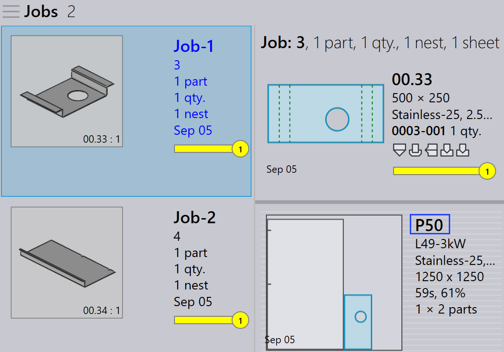

Réemballage
TruSmartCAM n’a pas de module de réemballage séparé. Au lieu de cela, le réemballage est géré par des options au niveau du travail qui offrent une flexibilité dans la façon dont les pièces sont combinées.
Il existe trois façons de procéder au réemballage.
-
Réemballage avec Pièces mélangées de tâches multiples.
-
Réemballage manuel en utilisant l’assistant interactif Ajout de pièces….
-
Réemballage manuel en utilisant TecZone.
Réemballage avec Pièces mélangées de tâches multiples
-
Pour activer cette option, allez dans usine → réglages → Tâche → Réglages d’imbrication → Pièces mélangées de tâches multiples.

-
Lorsqu’elle est activée, cette option permet de regrouper des pièces de différents travaux lors de l’imbrication automatique ou de l’imbrication interactive, ce qui donne lieu à un emballage ou à une imbrication combinés.
-
Par exemple :
-
Job-1 a 1 pièce, Job-2 a 1 pièce.
-
Avec Pièces mélangées de tâches multiples activé, TruSmartCAM peut réemballer ces 2 pièces en une seule imbrication optimisée.
-

-
Sans cette option, les pièces de chaque travail restent séparées pendant l’imbrication/l’emballage avec différents noms de mise en page.
-
Le réemballage peut également être effectué manuellement sans activer cette option.
Réemballage manuel en utilisant l’assistant interactif d’ajout de pièces
-
Depuis la vue de mise en page, sélectionnez les pièces que vous souhaitez réemballer.
-
Faites un clic droit sur la pièce et choisissez Ajout de pièces… dans le panneau de mise en page.

-
Suivez les invites de l’assistant pour terminer le processus de réemballage.
-
Choisissez Afficher les autres pièces de tâche et ajoutez-les au travail actuel.

-
Examinez les modifications et confirmez le réemballage.

Pour plus de détails, consultez Add Parts.
Réemballage manuel en utilisant TecZone
-
Ouvrez le TecZone en cliquant sur
 .
.

-
Dans l’interface TecZone, cliquez sur Add.

-
Une nouvelle fenêtre apparaît où vous pouvez sélectionner les pièces à réemballer. Cliquez sur Afficher… puis sélectionnez Autres pièces de tâche. Après avoir effectué votre sélection, cliquez sur _Choisir.

-
Une nouvelle fenêtre apparaît où vous pouvez définir où la pièce doit être réemballée.

-
Cliquez sur Enregistrer les modifications vers Praxis et la mise en page réemballée sera disponible dans TruSmartCAM.